来源：https://wq71epaod4q.feishu.cn/docx/ItGCdx84voNjcWxrI6IclXAYnfb
各位大咖们好，我是金珠，一个在浙江嘉兴嘉善的小镇开炸鸡店的女生，20平方的农民房里一个月营业额10万+，我只用了5个月的时间
我是23年9月8号加入生财的，加入生财是因为听博客的搞钱女孩，听到主播陈雪说想要赚钱一定来生财，于是乎第二天就加入生财了，看到的生财的帖子，会焦虑，妈呀个个都是武林高手，我这个三脚猫功夫不敢显摆，这段时间看了《能断金刚》中提到布施能带来财富（利他思维），记得黄小刀说过只有举手才会有机会，所以就出来献丑了（欢迎大咖链接）
本篇分享详细记录如何在人生迷茫绝处逢生出生发“炸鸡”这个项目并且在第五个月内，县城美团/饿了吗的🈷️排行榜前三/月入10w+，
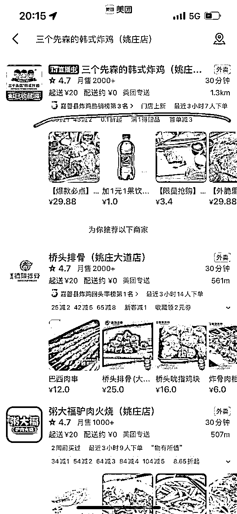
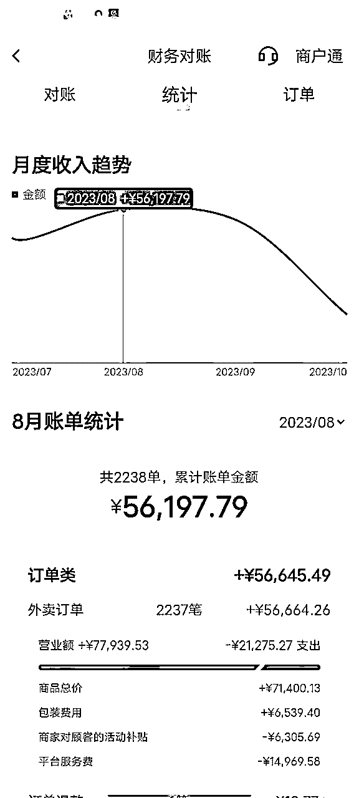
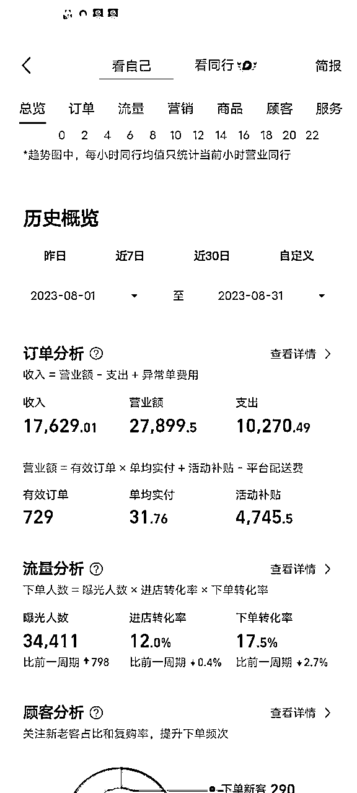
1． 为什么选择“这个品牌”？
我们县城有很多品牌的炸鸡
比如：叫个鸡/叫了只炸鸡/王炸炸鸡/Bigbear 韩国炸鸡等
但我最终选择三个先森的韩式炸鸡
量上：其他都很小数量多 / 但三个先森每个都很大
口味：其他品牌调料单一/三个先森选择性多
肉质：其他品牌肉太柴/三个先森 肉很嫩
最重要符合本地化：本地人喜欢带点甜的味道，三个先森招牌就有甜辣酱（不是很甜不是很辣）
开店之前也问过周边朋友，都偏向于喜欢这个品牌
根据以上的情况，首选“三个先森的韩式炸鸡”
于是就花了2天时间去考察炸鸡，去上海/苏州 考察了3家觉得好吃品牌不错的炸鸡，最后确认还是选择“三个先森的韩式炸鸡”
2． 如何选址？
开店选址是非常重要的，这大家肯定知道
但最终取决你的运营方式，选择线下，你的餐饮是以进店客户为主要，那就一定要人流量，曝光度的繁华商圈的地段，逛街的人路过，又正好是饭店肯定会进去尝尝，比如：火锅店（我叔开的5家火锅店就是在中心商圈，生意就很好）
但我们这个炸鸡就是主营的方向就是线上
线上就是外卖，繁华地段不适合，主要店铺租金成本太高，炸鸡客单价不高，那利润空间就很小了。
选择一定选择成本底，说一下我们选址的经验吧
在2023年2月份我们刚开始找了几周都没找到合适的店铺（餐饮的营业执照很难办：居民楼下不可以开，这一条就卡的死死的了）
那只有考虑商场了（是真的没找到合适情况下且租金在能接受的范围内）
第二天带着钱去签合同的说租金5万/年，在1楼15平方的一个店铺，准备给钱的时候，突然就多了个8600元的物业费，超预算了，于是就留着备用，再去找找其他店铺
于是乎开始继续寻找店铺，妈呀 真的吸引力法则，开心死，找到一个2万/年，激动的心颤抖的手，马上就要带我去付钱了，但原店家已经回老家，现在不肯提早出来（原来的营业执照还在，我们就不能办理新的营业执照）。
当时在想加盟费几万都付掉了，店铺找不到那就血亏呀，再找，真的皇天不负有心人，可以说我的运气真的无敌好，真的信念很重要，就是要把这个店开起来，最后找了个民房，营业执照可以办下来，房租8400/年，房租付款方式刚开始谈季付，最终谈的是半年付的，最后都在计划之中
（因为第一次开店，后路要想要，付款方式对于乙方来说越划算越好，后期不幸了也好脱身）
复盘选址：
第一：选对时间很重要，选址事半功倍
2023年1月30号开始落实找店，是正月初九，有很多店铺去年干得的不好，基本在年底的时候就挂转让/出租，店铺年后营业最早的是初八开门，最晚的都要正月十五（大部分店铺）
这个时候去找店铺空店概率高，那选择性就多了，最开始找到的商铺5 万/年，还有2万/年，最后8400/年 都是在这段时间出来的，你只要找店铺的时候认真，仔细的找就能找到，一条街你要逛过打底3次以上，你才会看到他们，有的店铺是真的不起眼的呢，你只要认真多次再加一点信念就可以了找到你心理的店铺 （电视剧天道中的“格律师”就是在年底和第二年年初这段时间找的，租金/价格都好谈，我已经帮你验证了确实如此呀）
小tips:节约 转让费
之前的老店家都会这么干，如果生意不好，基本快到过年直接走了，那后者进来只交房租即可/ 其他时间找店铺那就增加转让费的概率，有很多转让费不比房租低的，除非就是你是为了这个地址而去的，不然真的大可不必，（有个螺蛳粉，租金5万/年，转让费10万，共计15万，那加装修加设备 不得几十万/店），小生意店铺没必要浪费这个钱（个人想法，你是土豪当我没说）
第二：租金要比同行底
比如：5万/年的地方和2万/年的地方，虽然差3万，但长期看能剩下不少钱
2万/年和8400元/年的地方，那干起来多有劲，多的钱都是自己的
第二：配送覆盖地址要扩大
以营业执照的地址作为一个点，覆盖商圈（就是在商圈的内的点外卖都可送达），这个点不是一个圆圈，是一个不规则的图形，你要知道小店可送达的客户最远到达的地址的哪里，有的区域是超过划线的区域，你可以和平台经理（美团经理）提出把他划分进来
比如：我们区域到东边一个小区就到边界了，但小区边上有一大片的厂区，这个厂区是很重要，需要划分进来（外卖可送达的地方），店里40%的订单来自厂区呀！
我们南面到桥头面积就覆盖了，但桥头边上的有个老破小的小区，这个也要划分进来，这个地址点单量占8%
我们这边的3公里范围，每个地区美团/饿了吗 的要求不一样，自己可以在后台添加/找经理添加
就是找店铺有技巧：首先你看中了一个地方，问一年租金，觉得合适，和房东交代自己做的品类，然后再去当地办证中心问，某某地址开自己品类的项目营业执照能否办下来（这一步非常关键），办证中心的工作人员电脑一查确定可以，然后才可以进行下面的操作，谈租金（优选选择季度，半年付，最后在年付），在装修等。
如果你没有去办证中心问情况，因为你的营业执照办不下来，无法营业 ，那你的房租钱，装修钱就真的打水漂。
3，如何运营？
运营很重要，不然店开了没客户来买，所有做的一切是打水漂的，需要客户来买单呀
所以在运营方面有公司总部的方法结合自己的小tips结合
希望对你们运营店铺有所用，不仅仅是餐饮，在其他品类的实体店也可采用。
1.免费试吃，给新客户打折 --朋友圈曝光 新店，味道很怕不好吃呀，于是找朋友免费试吃，但要发朋友圈宣传就行了（让小镇的人知道有个炸鸡店最近开业的消息），给新客户打7.5折扣（外加送饮料），有客户因为朋友圈慕名而来
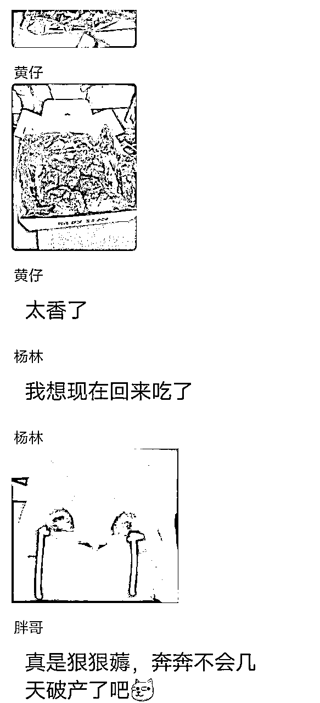
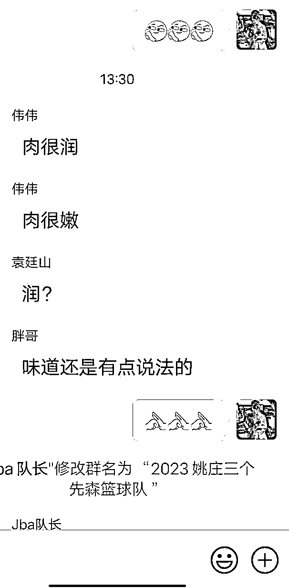
挂链接也有技巧哟
迷你版：6.9元（引流）
小份：15元 （1人份）
中份：25元 （2人份）
大份：50元 （4-5人份）
这样的选择客户覆盖率就会很广了！一个人也可以点，一群人聚餐也可以点
（这个对于同城是很好的，抖音流量大，会推送给当地区域的人，链接价格15.8的份，送饮料，在10天内到店核销 ，否则享受不到该福利）
这个当做引流，到店后提高客单价！客户到店后会拿手机核销二维码，但在之前我们会进行转化，和客户说抖音的套餐肉很小，你换个套餐肉多 只要加几块钱，免费多送一个酱料，一般来10个8个的客单价都会提高
有些人吃过县城的“三个先森的韩式炸鸡”但小镇没有，这不我们来了，味道不差，自然就有流量 ，这个就会自带部分的流量下单（这个也就是前期调查过周边朋友对这个品牌的认准）
4.告诉下单美团给5星好评给加肉。
给客户好处，味道不差情况下，客户会给好评的
注意：新店需要好评，也需要单量，只要单量起来，好评价多，那么其他新客户看到，就是尝试点餐进来。 刚开始会找朋友下单，让朋友在美团/饿了吗 下单，且给好评
好评怎么写？
图片+文案 肯定说服力会很高！
文字不需要每一条都是80字以上的，这样一看就是假内容，比如10条好评，其中2条字0字以上，配上刚买的炸鸡原图拍照，（好吃的炸鸡，肉质饱满，外皮很酥脆，某镇最帮的炸鸡，关键老板是个非常好的小哥哥，物超所值，外卖卫生干净，很喜欢的他家的口味必须给5星好评，YYDS） 评价： 其实这种要有，就2条就够，太多看起来就是刷单的
剩下的8条，字数少，也可以指出缺点的评价下
比如：味道还行就是量太多了，呜呜吃不完+图片
味道确实好，绝绝子/同事推荐，还不错，就是老板忙的手套忘记放了，，/一个字nice/妈呀，这个点了bt辣，辣死了 还是甜辣适合我/好吃，每次宵夜都会点
评价：字数少，反而可信度会高。
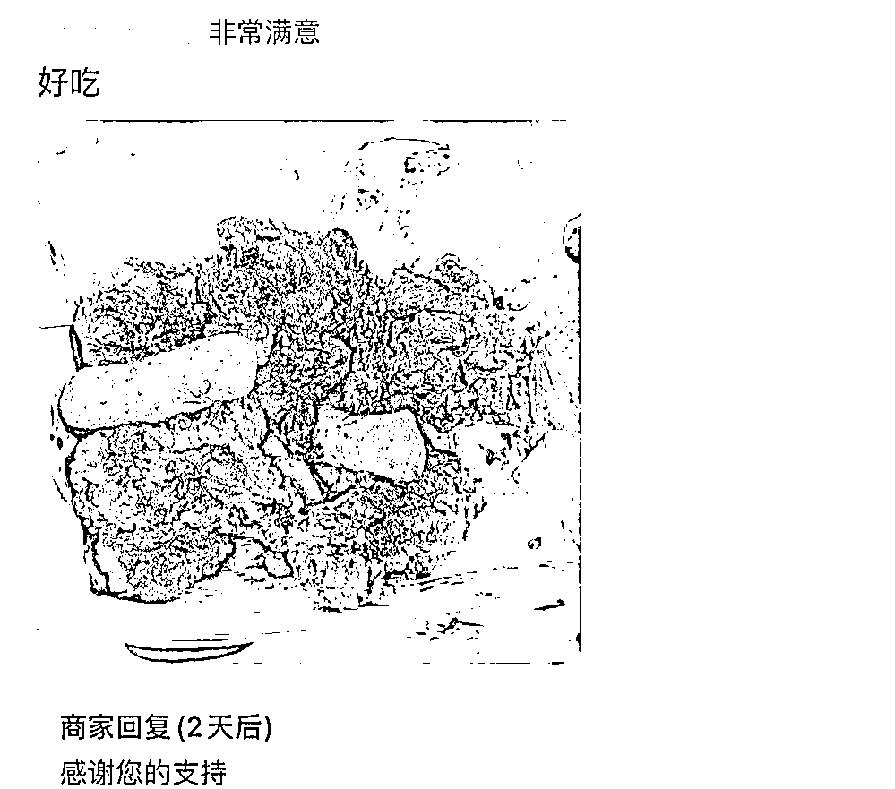
5.发朋友圈+图片 下次点餐备注，给你加肉
6.刚开始需要刷单，美团就有个拼好饭，（就是原来25元一份的中分炸鸡，只有9.6就可以点到）也就是迷你版本的，价格便宜，一个月美团能跑单量2000+
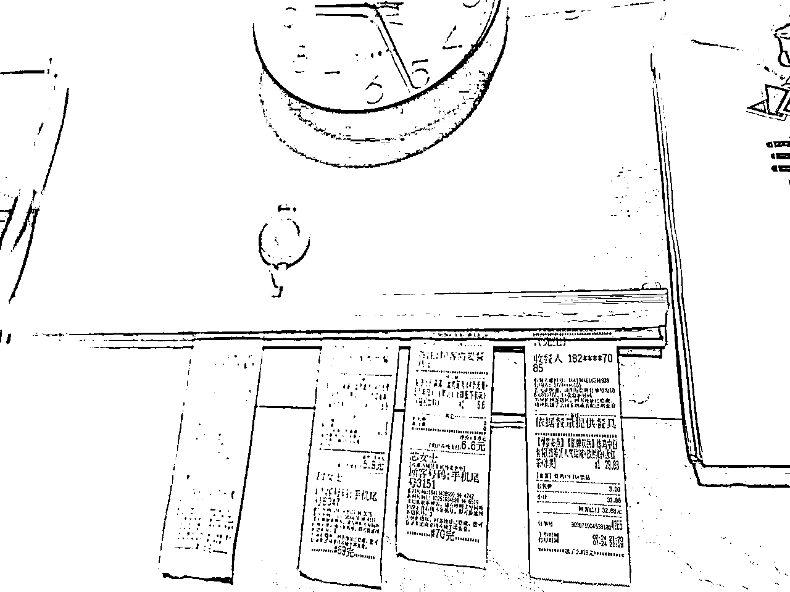
总结运营：线上为主的，前期单量先上来，好评也好跟上去，数据上去了，月销量上去了增加曝光度，点击进来的多，下单也不会少，有机会冲平台的首页！（因为加盟店铺所以平台产品图片公司会提供都是美图，后期🈶家人自己开不加盟图片方面可以参考同行滴）
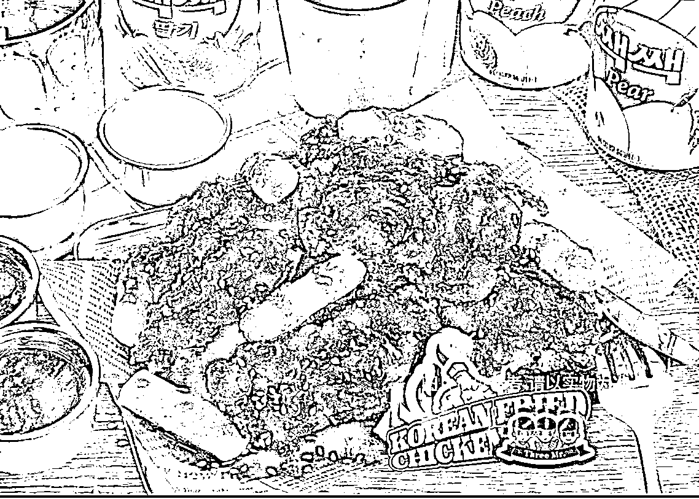
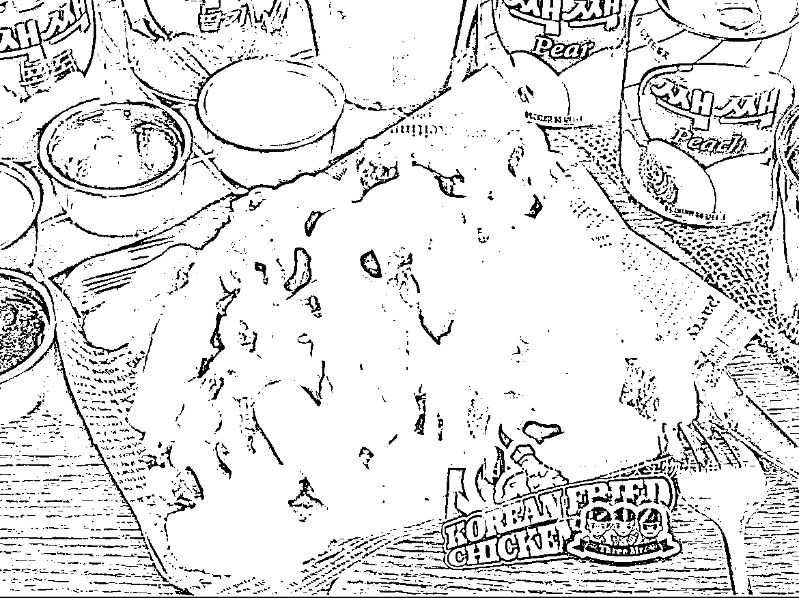
中期单量和好评也不能定停！滚雪球的形式，好评会带动观望客户，引导刺激客户下单，客户下单数量多，单量就上去，有机会冲前5名！
但数量上去，你冲上首页，会有差评，不用焦虑，也会有同行恶意差评，我们服务服务就是80%的客户就行了，后期稳定了，就偶尔搞了活动，周三营业额最差，前30名在 饿了吗下单 送彩票（成本1元/里面是刮刮卡）
餐饮味道一定要好，要多好？
比你同区域的同行好 就会有复购率
比如：一个人累计下单20次30次这种很多，50次，60次，70次都有 （哈哈，我在想他们不吃其他嘛?只吃炸鸡嘛?）
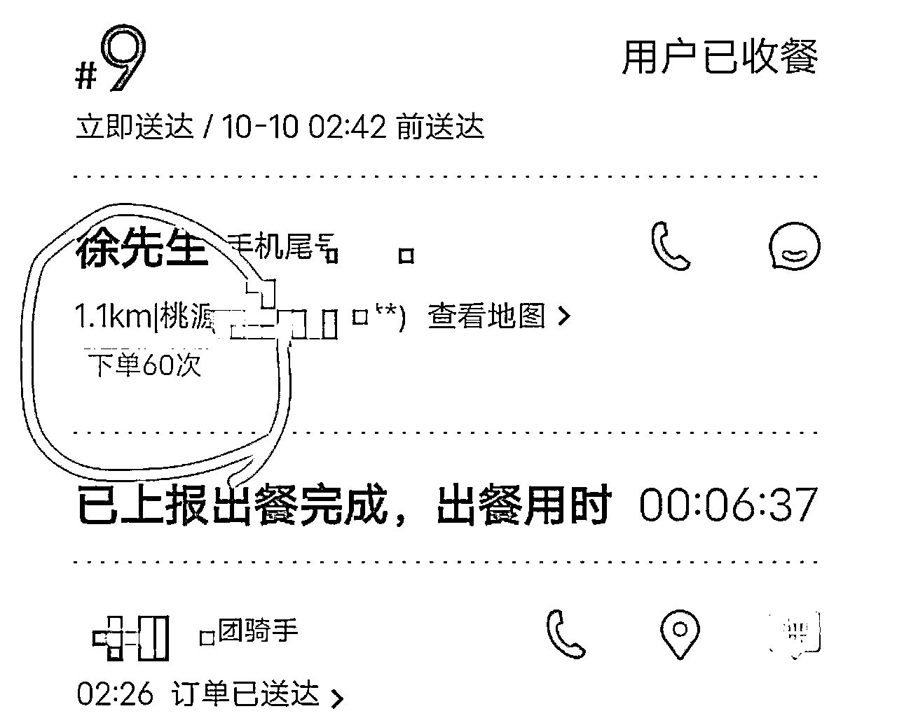
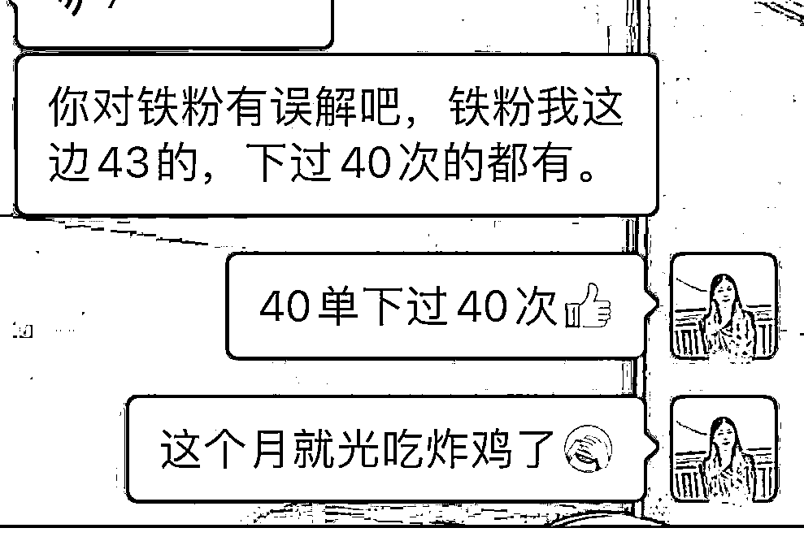
其实开炸鸡店前，我们的同学在县城就开了炸鸡店投入30w+，用了一年亏完，我们就问他失败的经验的，有钱人的想法就是最好一步到位，装修，店位置一定要最好的，但遇到疫情就倒闭了。
而我们就只有10万，加盟费没办法省下来，那就从装修省钱，都是最便宜的瓷砖，3.8元/块（30*60），大头就是后厨的工具！！双开冰箱（二手），烟机操作台（二手），大小炸锅油（新的），桌椅（二手），我真的运气很好，哈哈 听说有个小店铺和我们做的品类类似但要倒闭了，这不我就去捡漏了嘛。
加盟费：3.98万+8000保证金+6000管理费＝5.38万
装修费：门头3000+乳胶漆500+工人3000+瓷砖1000+人工4000＝1.15万
设备费:二手冰箱双开门1600+二手操作台800+腌料锅5000（总部进）+两个小炸锅400+桌椅（二手）140*6/个
+吧台400（淘宝）+二手油烟机500＝9340
材料：打包带袋（大/中/小）+打包盒（大/中/小）+蘸料（5种口味）+锡箔纸＝1.5万（首批进货金额）
食材：冷冻无骨鸡+冷冻鸡翅根+小鸡+小吃（鸡柳/紫薯/骨肉相连）+油＝8000 （4天的量）
以上费用共计97640元
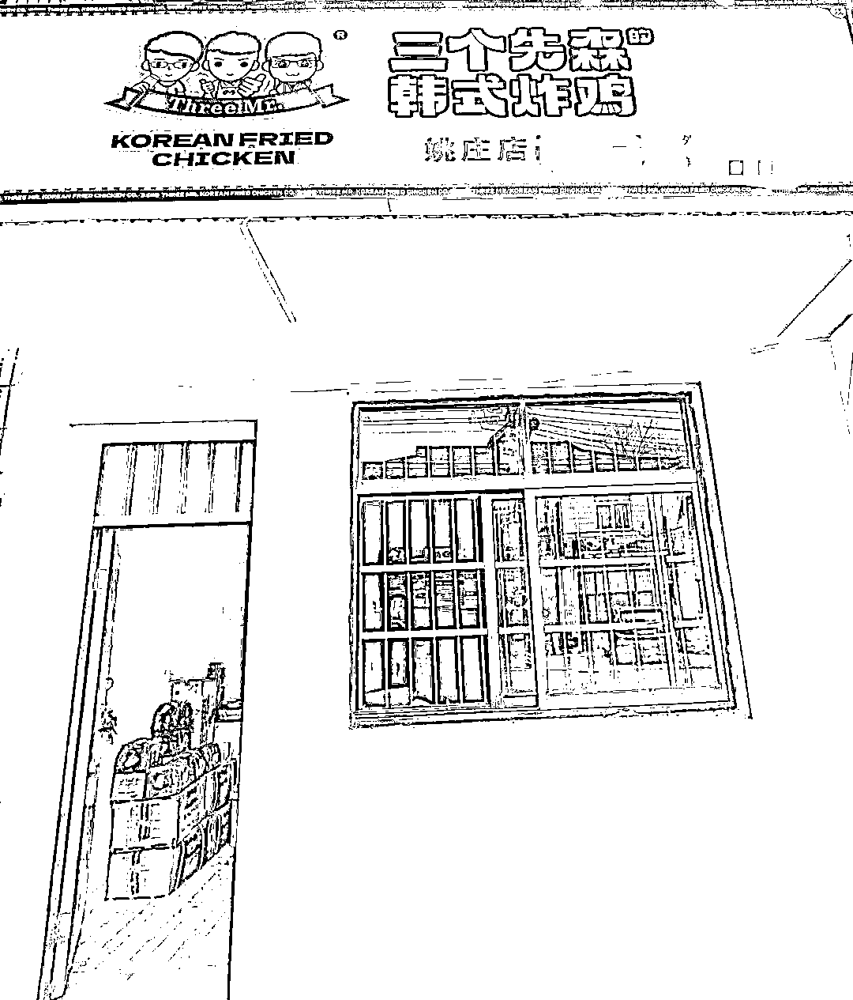
因为所有家当都在里面，就必须好好干，刚开始新手，炸鸡很生熟，动作慢，老是被外卖小哥催，全家总动员也来不及
第三个月熟练了，老公就可以干全部，公公就去打下手。
用了17天，单量2000➕（是非常不错成绩）
为什么容易焦虑，太闲了。我老公就很接地气，先干了再说，边干边改进. 用了三个月美团/饿了没 排行榜从前十到前三，现在是第二名（整个县城哟）。
为什么同样开“炸鸡”我们比同行会做的更好？
第一：套餐选择性多
有很多店铺，都是选择性小，那覆盖面积就小了
而我们的选择性多，覆盖面积大，客户选择我们的可能性就很大
比如第一个点，20家炸鸡店，就可以干掉25％同行
第二：味道肯定要好（同区域的同行相比）
这个就产生复购率了！
餐饮味道大于一切！
以上第二个点，还可以在干掉30％同行 （因为我们小镇的味道吃来吃去就这么几个口味，你只要比同行好，就是优势）
第三：营业时间比同行长（冲上前三）
其他店铺凌晨1点就关门
我们就凌晨2.00关门！
夏天后半夜的不睡觉的人还不少，单子还是30单这样（平均：130单/天）
用以上第三个点，还可以干掉30%同行（夏天推荐，我们当地是这样，可以根据你们当地的情况而定）
结合以上3个点的总结：人无我有，人有我优！干掉85%的同行，首页前三基本就稳定了
这次的分享就到这里的，真的写的好细好细，自己已经扒了2层，后被鱼丸扒了一层，又被陈雪又扒了一层，感觉一个美女的衣服被扒光（干货）站在各位大咖面前了，每一寸每一个肌肤都被看的很清楚，真的是毫无保留的干货
以上信息对于实体来说是非常有用的，为啥这么自信？我叔火锅店200平/3家 在美团/饿了没/大众点评 每个好评都是我拿客户手机一个个刷上去的（大城市实体店对于好评是非常看中的）
好了分享结束，感谢你们的观看， 欢迎各位大咖交流，把我所知都毫无保留的分享给你们，对于副业我都很热衷的，欢迎同频小伙伴一起交流。
最后感谢引路人陈雪，感谢生财这个圈子，感谢周边的一切。炸鸡店只是我副业的一条腿，后期有机会可以和大家分享我的主业，中介野生二房东的事业。